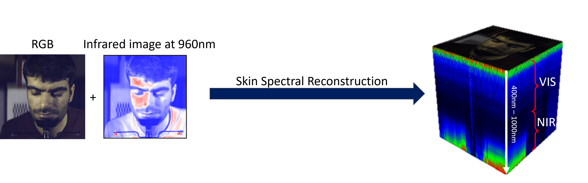

Introducing ICASSP 2024 SPGC competition aiming at reconstructing skin spectral reflectance in the visible (VIS) and near-infrared (NIR) spectral range from RGB images captured by everyday cameras, offering a transformative approach for cosmetic and beauty applications. By reconstructing the skin spectral reflectance in both VIS and NIR spectrum, this competition aims to provide rich hyperspectral information accessible on consumer devices. With the reconstructed skin spectral, we pave the way for the creation of personalized beauty and skincare solutions directly through consumers' smartphones and other accessible devices. With the goal of democratizing skin analysis and advancing the field of beauty technology, this competition invites computer vision researchers, machine learning experts, and cosmetic professionals to participate in skin spectral reconstruction, making personalized beauty and skincare are accessible to all.
Important Dates
The skin spectral reconstruction task aims to reconstruct the skin spectral image cube from the given RGB image. Let \(R \in \mathbb{R}^{w \times h \times c}\) be the RGB image and \(S \in \mathbb{R}^{w \times h \times C}\) the skin spectral, where \(c<<C\), the goal is to find a function \(f\) that reconstruct \(S\) from \(R\), as described below:
The function \(f(\cdot; \Theta)\) parameterized by \(\Theta\) can be implemented using a deep learning model or any other analytical model that can effectively learn the mapping between RGB and hyperspectral images. The task is both scientifically and technically challenging, but not impossible to solve.
In this competition, participants will have access to two distinct datasets. The first dataset comprises a pair of RGB and VIS data, while the second dataset consists of a pair of MSI (RGB + infrared image at 960 nm) and NIR data. The challenge is to develop a single model capable of reconstructing skin spectral information across both the VIS spectrum (400 - 700 nm) and the NIR spectrum (700 - 1000 nm) using the MSI data, which is generated with a real camera response function. Detailed instructions on how to request access to the datasets will be provided in our Github organization once you register for the competition.

The reconstructed skin spectral will be evaluated from both spatial and spectral domains, with the Structural Similarity Index (SSIM) and the Spectral Angle Mapper (SAM).
During the evaluation process, a mask will be employed to exclude the background image, ensuring that the assessment remains centered on the human skin spectral characteristics. The evaluation metrics will be provided via our Github organization. All registered participants, who have signed the EULA, should be able to access the evaluation code. More information is available here.
For the task to skin spectral reconstruction, we will use the Mask-guided Spectral-wise Transformer (MST) published in 2022 CVPR conference as the baseline solution. This method leverages a transformer-based architecture that takes RGB images as input and generates corresponding skin spectral data. The data loading and baseline methods will be provided to all the registered participants via our Github organization.